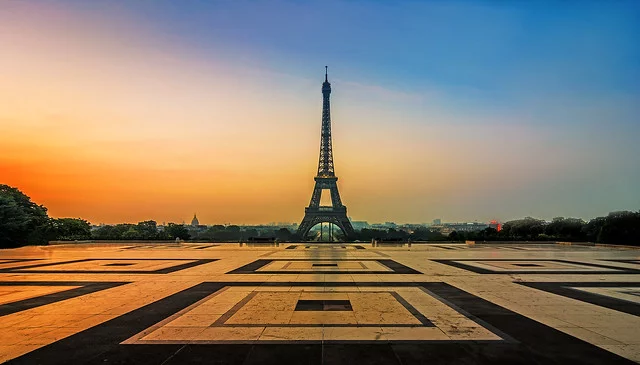
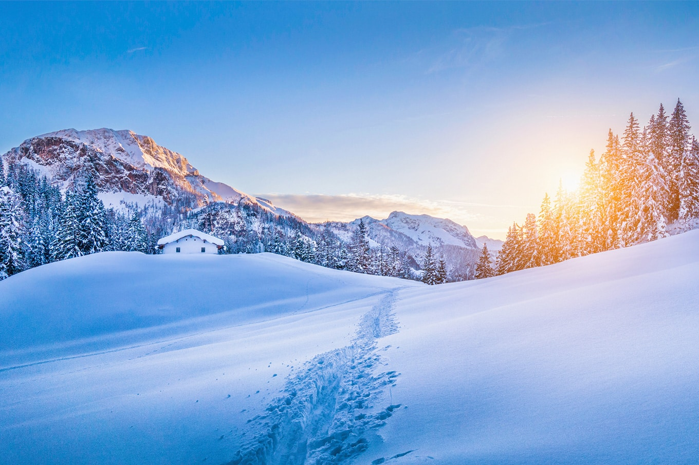
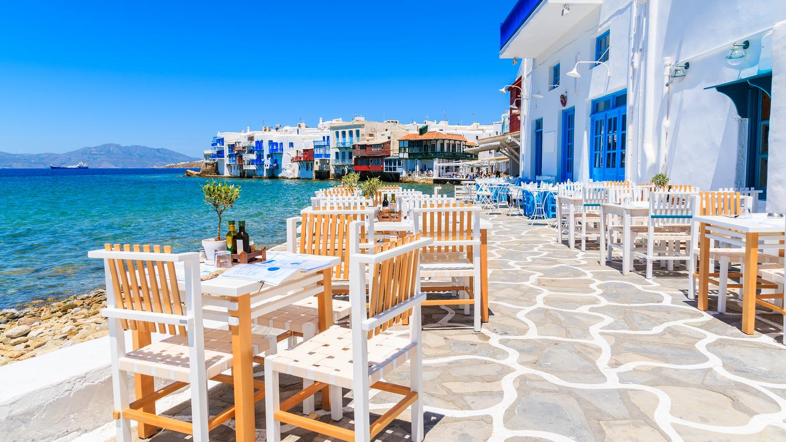
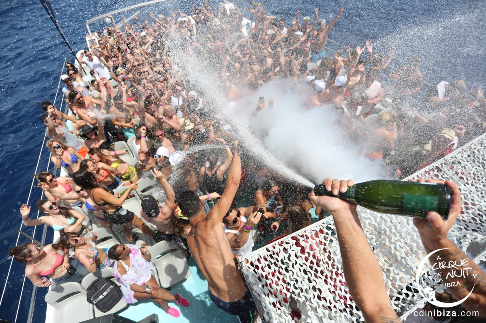

Neste canal você encontra dicas dos melhores destinos!!!
1. Coliseu em Roma, Itália
O Coliseu, cujo nome oficial é Anfiteatro Flaviano, começou a ser construído em 72 d.C e demorou oito anos para ficar pronto.
A construção, de concreto e areia, foi comandada pelo imperador Flávio Vespasiano – homenageado pelo filho Tito, que governava Roma quando as obras acabaram.
2. Torre Eiffel Paris, França
Torre Eiffel é uma torre de treliça de ferro forjado no Champ de Mars, em Paris, França. Tem o nome do engenheiro Gustave Eiffel, cuja empresa projetou e construiu a torre. A torre tem 330 metros de altura, aproximadamente a mesma altura de um edifício de 81 andares, e é a estrutura mais alta de Paris.

3. Alpes suíços, Suíça
Alpes Suíços são uma extensa área montanhosa da Suíça, com muita neve no inverno e perfeita para visitar nos meses mais frios do inverno europeu ou então durante o verão, para apreciar as belas paisagens de montanhas.

4. Ilha grega, Mykonos
Mykonos é um dos destinos mais desejados da Grécia. Com fama de ser a mais animada das ilhas gregas, Mykonos vai bem além das grandes festas dos beach clubs e reserva lindos cenários para os viajantes entre as maravilhosas praias do mar Egeu. Se você está em dúvida se deve ou não incluir Mykonos no seu roteiro pela Grécia, podemos garantir que a ilha vale cada segundo! Aproveite o lindo mar das praias de Mykonos e relaxe diante do estonteante pôr do sol da ilha. Não esqueça da taça de vinho para acompanhar! Você tem muito o que fazer em Mykonos e está na hora de programar a sua viagem dos sonhos!

5. Ibiza, Espanha
Ahhhh! Masss se você está a fim de muitaaa badalação Ibiza é o lugar! Configura-se como um dos destinos mais badalados e animados de toda a Europa, principalmente, na alta temporada, quando a ilha fica ainda mais vibrante e cheia de gente bonita.
